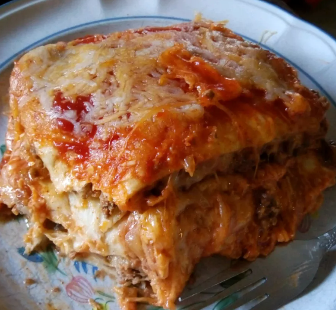

Lasagna

Description
This is a traditional dish in my family. Anyone can make it really.
It is composed of traditional Mexican ingredients layered over the
top of one another in a lasagna-like fashion (hence the name) but has
little similarity to lasagna, so lasagna haters have no fear!
Ingredients
- 1 ½ pounds ground beef
- ¼ cup water
- 1 (1 ounce) packet taco seasoning mix
- 12 (8 inch) flour tortillas, or more if needed
- 1 (14 ounce) can refried beans
- 3 cups shredded Colby-Jack cheese
- 1 (8 ounce) jar taco sauce
- 1 cup shredded Colby-Jack cheese
Steps
- Preheat oven to 350 degrees F
- Heat a large skillet over medium-high heat and stir in ground beef
- Arrange 3 tortillas in the bottom of the casserole dish
- Bake in the preheated oven until top tortilla layer begins to brown
- Turn on oven's broiler.
- Place lasagna under the broiler until Colby-Jack cheese is melted and bubbling